Chiari Neurobiomechanics Research Laboratory
August 8, 2026 · 8:00 AM – 5:00 PM
Interdisciplinary Science & Engineering Complex (ISEC)
Northeastern University — Boston, Massachusetts
Sponsored by Bobby Jones Chiari & Syringomyelia Foundation
The CNRL Open House 2026 brings together researchers, clinicians, patients, and students for a full day of scientific talks, poster presentations, and live demonstrations centered on Chiari malformation, cerebrospinal fluid dynamics, and neurobiomechanics. The event showcases the latest work from the Chiari Neurobiomechanics Research Laboratory at Northeastern University alongside invited presentations from leading researchers and surgeons across the field.
A highlight of the day is a dedicated Patient Experience session, featuring talks from CMI patient advocates and individuals living with Chiari malformation — bridging the gap between clinical research and the patient community. All are welcome: engineers, neuroscientists, surgeons, students, patients, and anyone curious about this important area of research.
Four research sessions featuring invited speakers from leading institutions.
Lab members present ongoing research alongside live demonstrations throughout the day.
Dedicated session featuring Chiari patient advocates and their personal perspectives.
Saturday, August 8, 2026 · ISEC Building, Northeastern University
| Time | Session |
|---|---|
| 8:00 – 8:30 AM | Demos & Posters (coffee & tea) |
| 8:40 – 10:00 AM |
Research Session 1
|
| 10:00 – 11:00 AM | Demos & Posters (coffee & tea) |
| 11:00 AM – 12:00 PM |
Research Session 2
|
| 12:00 – 1:00 PM | Lunch & Demos / Posters |
| 1:00 – 2:00 PM |
Research Session 3
|
| 2:00 – 3:20 PM |
Patient Experience Talks
|
| 3:20 – 3:40 PM | Demos & Posters (coffee & tea) |
| 3:40 – 4:25 PM |
Research Session 4
|
| 4:25 – 4:35 PM | Closing Remarks |
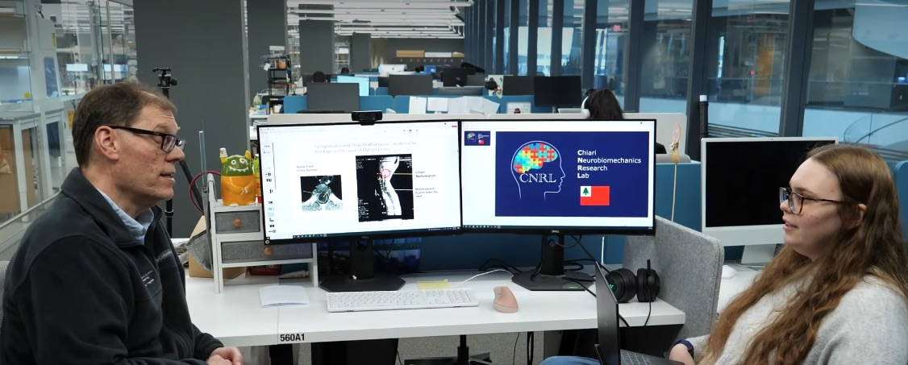
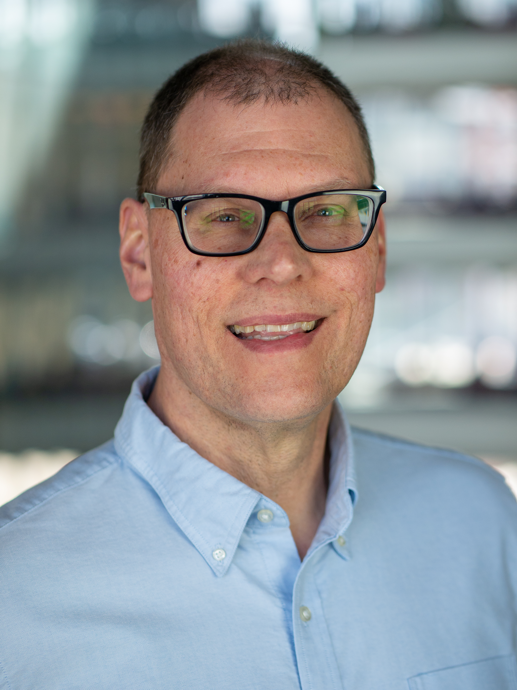
Professor, Mechanical & Industrial Engineering and Bioengineering — Northeastern University
Dr. Loth received his Ph.D. in Mechanical Engineering in the area of biofluids from the Georgia Institute of Technology in 1993, and has held faculty positions at the University of Illinois at Chicago, the University of Akron, and most recently Northeastern University, where he is a Professor jointly appointed in Mechanical and Industrial Engineering and Bioengineering. His research spans biological flows, experimental and computational fluid mechanics, blood flow simulation, cerebrospinal fluid dynamics, Chiari malformation, syringomyelia, and medical image processing. He has been a leading figure in applying engineering analysis to understand CSF hydrodynamics in craniospinal disorders.
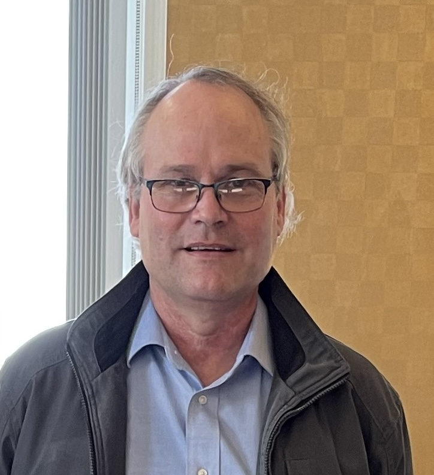
Psychology — University of Akron; Former Deputy Director, Conquer Chiari Research Center
Dr. Allen received his Ph.D. in Psychology from Ohio State University in 1987, completed a post-doctoral fellowship at Duke Medical Center, and subsequently held faculty positions at Cleveland State University before moving to the University of Akron Psychology Department in 2000, where he served as Deputy Director of the Conquer Chiari Research Center. His Chiari research focuses on the intersection of pain, cognitive dysfunction, and affective disturbance, employing behavioral and neuroimaging techniques to understand the neuropsychological consequences of Chiari Type I Malformation.
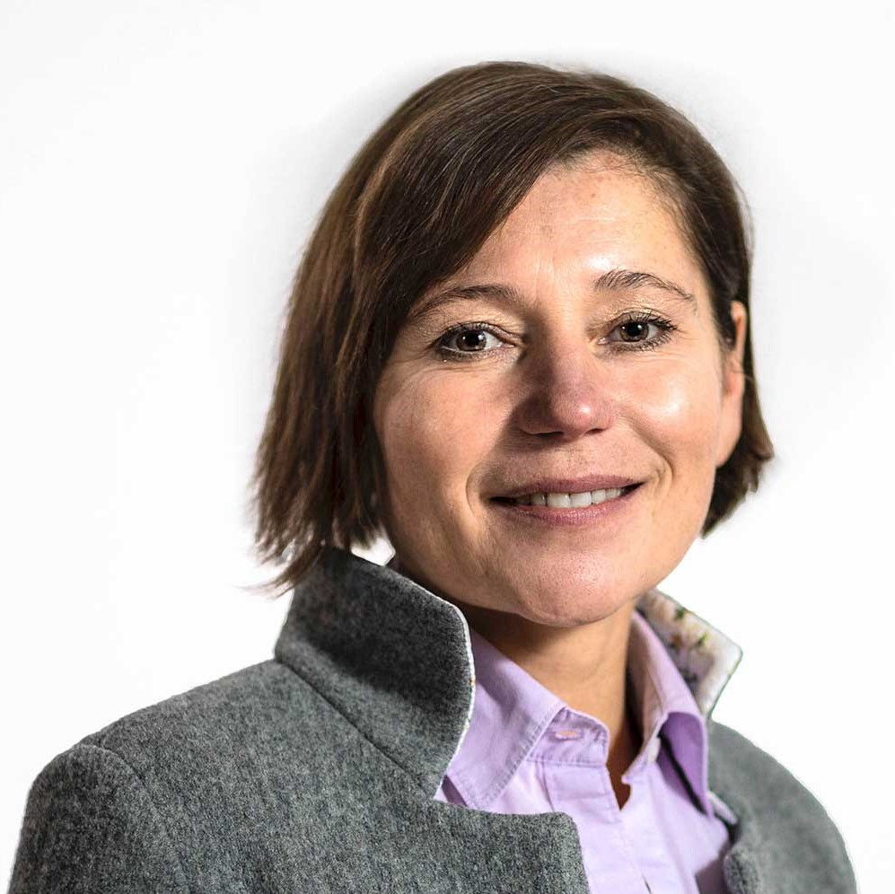
Associate Professor of Neurosurgery — Brown University / Rhode Island Hospital
Dr. Klinge is an internationally renowned neurosurgeon specializing in the surgical treatment of brain tumors, hydrocephalus, Alzheimer’s disease, and congenital disorders including Chiari malformation and spinal malformations. She received her medical degree from the University of Kiel in 1993, completed her neurosurgical residency at Hannover Medical School in Germany in 2002, and has been an attending neurosurgeon and Associate Professor at Brown University since 2009. She has published extensively on Chiari, Ehlers-Danlos Syndrome, and related CSF disorders, and collaborates closely with colleagues at Rhode Island Hospital.
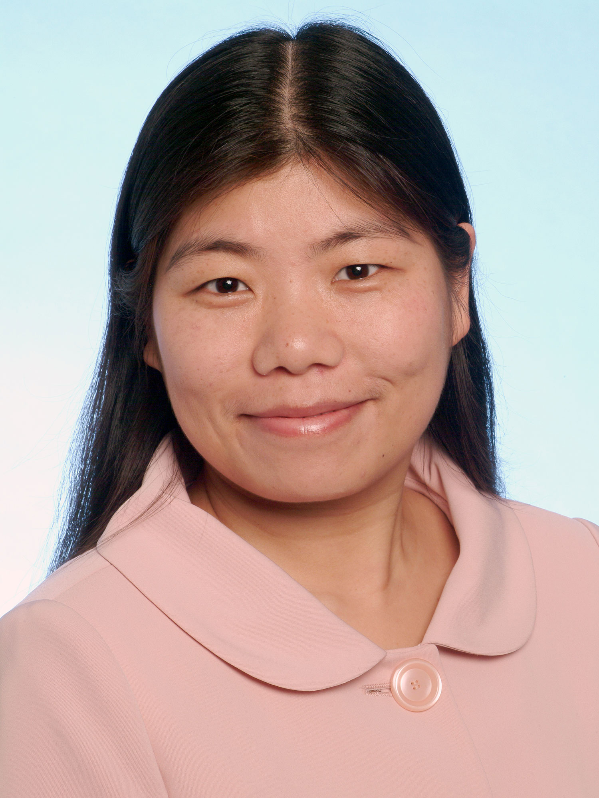
Professor and Chair, Mechanical & Industrial Engineering; Director, IHMS Laboratory — Northeastern University
Dr. Lin’s expertise spans intelligent human-machine systems, human factors in healthcare and transportation safety, smart sensors and sensing systems, multimodality information fusion, driver-vehicle systems, patient safety, and human-robot interaction. Her research has been funded by NSF, NIH, NIST, the Office of Naval Research, and major industries including GM and BOSE. She is a recipient of the NSF CAREER Award.
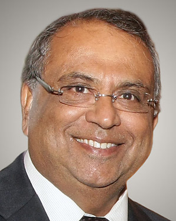
Associate Professor, Harvard Medical School; Clinical Director of Neuroradiology — Beth Israel Deaconess Medical Center
Dr. Bhadelia’s research focuses on advancing novel MRI-based imaging techniques to detect cerebrospinal fluid and brain motion, with particular application to the diagnosis and management of CSF circulation disorders in patients with Chiari I Malformation. He is a pioneer in quantitative CSF flow imaging studies.
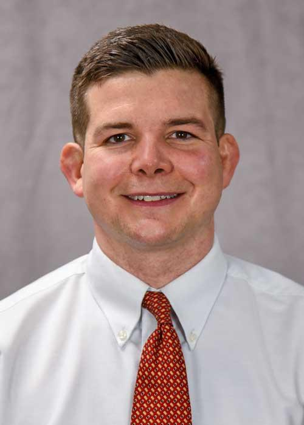
Assistant Professor of Anatomy — Edward Via College of Osteopathic Medicine
Dr. Millard’s research utilizes geometric morphometric techniques to address clinically oriented questions. His prior work has included 3D nerve mapping to guide lumbar spinal fusion procedures and tracing fascicular courses within peripheral nerves. As an anatomist with a special interest in the nervous system, his focus in Chiari malformation centers on 3D shape differences in skeletal anatomy associated with the condition. He received both his master’s and doctoral degrees from Lincoln Memorial University in Harrogate, Tennessee.
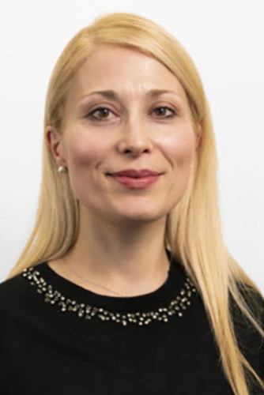
Associate Professor of Neurosurgery and Pediatrics; Director of Fetal Neurosurgery — Brown University / Rhode Island Hospital
Dr. Svokos is an Associate Professor of Neurosurgery and Pediatrics at the Warren Alpert Medical School of Brown University, where she serves as Director of Fetal Neurosurgery and Co-Director of the Center for Surgical Treatment of the Developing Brain and Spine. Her research focuses on improving treatments and survival outcomes in diffuse intrinsic pontine glioma, a uniformly fatal pediatric brain tumor. She has extensive clinical experience treating Chiari Malformation Type I, hydrocephalus, and normal pressure hydrocephalus, and has collaborated with Drs. Klinge and Leary on pediatric CSF disorder research at Rhode Island Hospital.
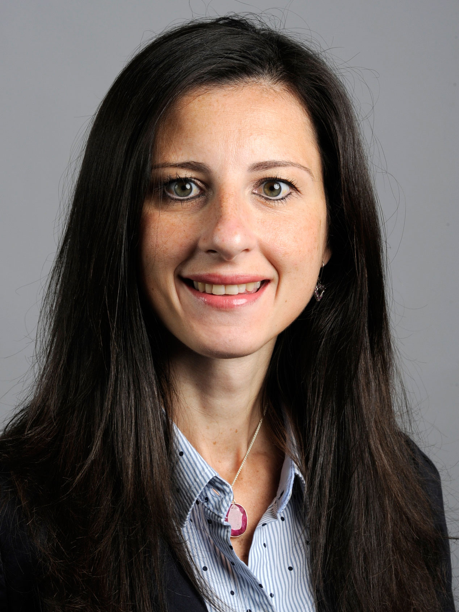
Associate Professor, Department of Bioengineering — Northeastern University
Dr. Bellini received her Ph.D. in Biomedical Engineering from the University of Calgary in 2012, where she studied changes in the mechanics of the left atrium following the onset of atrial fibrillation. She subsequently completed postdoctoral training in Prof. Jay Humphrey’s lab at Yale University, focusing on the mechanical characterization of thoracic aortic aneurysms and dissections using genetically-modified and pharmacologically treated mouse models. She joined Northeastern University’s Department of Bioengineering in 2016, and her research is focused on elucidating how pathophysiological processes of cell-mediated growth and remodeling affect the mechanical function of tissues and organs within the cardiovascular system, evaluating biomechanical changes in aortic function following aging, menopause, pregnancy, aortic aneurysms, and exposure to cigarette smoke, vaping, and wildfire smoke.
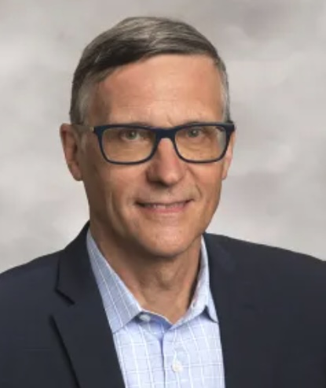
Professor, Emory University School of Medicine & Georgia Institute of Technology
Dr. Oshinski’s research applying engineering principles to medical imaging focuses on using Magnetic Resonance Imaging (MRI) to diagnose and treat cardiovascular and neurological diseases, specifically Chiari Malformation Type I (CMI). Oshinski utilizes DENSE MRI (Displacement Encoding with Stimulated Echoes) to quantify how brain tissue moves during the cardiac cycle. His work shows that CMI patients have significantly higher cerebellar and brainstem displacement compared to healthy individuals. His studies indicate that while brain tissue motion normalizes after decompression surgery, presurgical motion levels do not consistently predict postoperative clinical symptoms or recovery success. He investigates cerebrospinal fluid (CSF) dynamics and its relationship to brain motion.
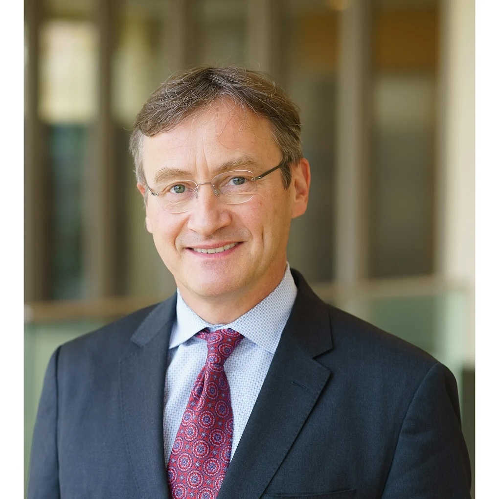
Neurosurgeon and Professor; Former Associate Professor, Harvard Medical School & Chief of Neurosurgical Oncology — Beth Israel Deaconess Medical Center
Dr. Kasper is an internationally recognized neurosurgeon and professor with deep expertise in surgical treatment of diseases and injuries affecting the brain and spinal cord, with a particular focus in neuro-oncology including brain, spine, and pituitary tumors. He earned his medical degree from Albert Ludwig University in Freiburg, Germany, and holds a neurobiology doctorate (DPhil). He previously served as Associate Professor at Harvard Medical School and Chief of Neurosurgical Oncology at Beth Israel Deaconess Medical Center for 13 years, and later as Professor of Surgery at McMaster University in Canada. He has collaborated on CSF flow and Chiari research alongside Dr. Bhadelia and others in the Boston academic community.
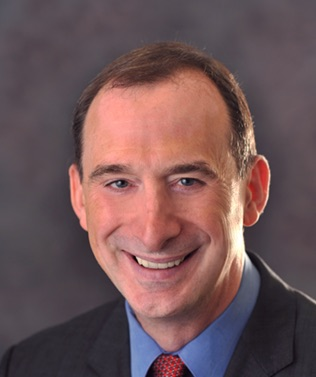
Neurosurgeon; Director, Chiari EDS Center — Mount Sinai South Nassau
Dr. Bolognese is an experienced and widely recognized neurosurgeon specializing in Chiari Type I Malformation. A graduate of the University of Turin Medical School (magna cum laude, 1986), he completed a second neurosurgery residency and a fellowship at the SUNY Health Science Center at Brooklyn specifically in the management of Chiari I Malformation and related disorders. In 2001, he co-founded The Chiari Institute alongside Dr. Milhorat, and in 2014 he established the Chiari EDS Center at Mount Sinai South Nassau, expanding his clinical focus to include craniocervical instability, tethered cord, syringomyelia, and related conditions. His surgical experience encompasses more than 1,600 Chiari decompressions and 900 craniocervical fusions, including 300 procedures involving condylar screws. He has contributed extensively to the peer-reviewed literature on Chiari malformation classification and surgical management.
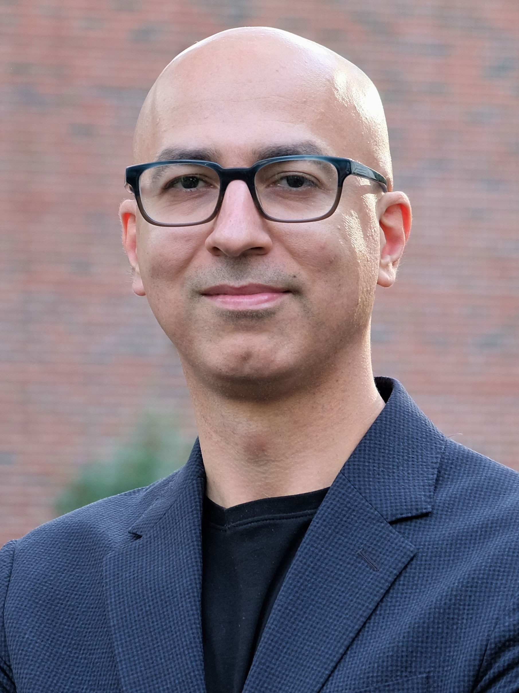
Professor, Mechanical & Industrial Engineering; Director, MAGICS Lab — Northeastern University
Dr. Heydari is a Professor in the Department of Mechanical and Industrial Engineering at Northeastern University, Co-Program Director of the MS in Engineering Management program, and Director of the Multi-AGent Intelligent Complex Systems (MAGICS) Lab. His interdisciplinary research focuses on modeling, design, and governance of sociotechnical systems where social behavior interacts and co-evolves with technology and AI agents, bridging computational social sciences and engineering using network science and machine learning. He earned his M.S. and Ph.D. from the Department of Electrical Engineering and Computer Science at UC Berkeley, brings three years of Silicon Valley startup experience, and has led projects funded by NSF, DARPA, IARPA, and private corporations. He is also a recipient of the NSF CAREER Award.
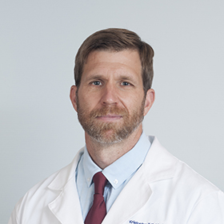
Nicholas T. Zervas Associate Professor of Neurosurgery, Harvard Medical School; Chief of Pediatric Neurosurgery — Massachusetts General Hospital
Dr. Kahle is the Nicholas T. Zervas Associate Professor of Neurosurgery at Harvard Medical School, Chief of Pediatric Neurosurgery at Massachusetts General Hospital, and Director of the MGH Hydrocephalus and Neurodevelopmental Disorders Program, as well as an Investigator in the Division of Genetics and Genomics at Boston Children’s Hospital and an Associate Member of the Broad Institute. His research focuses on identifying genes and pathways that regulate ion and water homeostasis in the developing nervous system, and how changes in these processes contribute to neurodevelopmental disorders — with the goal of translating basic science discoveries into novel therapeutic strategies for pediatric neurosurgical diseases including Chiari malformations, hydrocephalus, and spina bifida. He graduated cum laude from the University of Chicago in 1999 and earned his M.D. and Ph.D. from Yale School of Medicine in 2007.
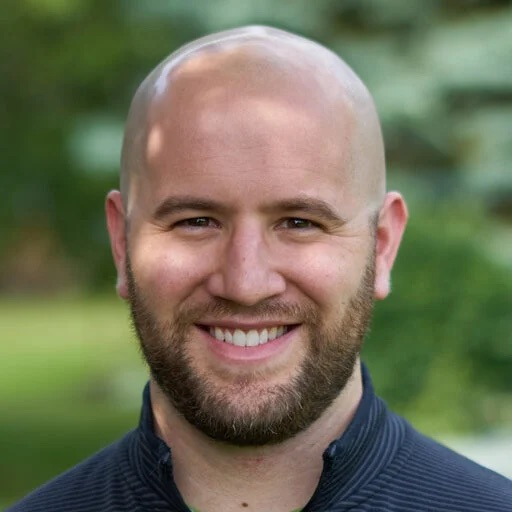
Associate Professor of Psychology; Director, MT Cognitive Aging Laboratory — Middle Tennessee State University
Dr. Houston is an Associate Professor of Psychology and the Director of the MT Cognitive Aging Laboratory at Middle Tennessee State University. He received his Ph.D. and M.S. in Adult Development and Aging Psychology from the University of Akron and his B.S. in Psychology from The Ohio State University. He completed a Postdoctoral Research Fellowship at the Conquer Chiari Research Center at the University of Akron before joining Middle Tennessee State University in 2018, where he directs the MT Cognitive Aging Laboratory. His research focuses on the neurological and behavioral aspects of aging, the neuroscience of emotion across the lifespan, and the role of the cerebellum in cognitive function through clinical research in Chiari malformation.
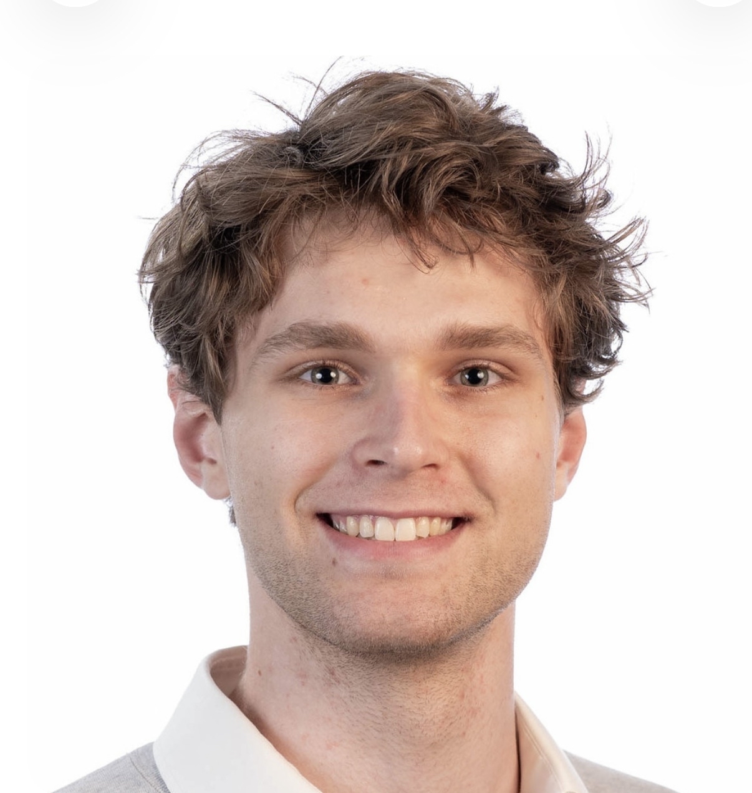
Northeastern University Students — MyChiari App Project
Mr. Mattis is an undergraduate student in Mechanical Engineering and Computer Science with expertise in app design. Mr. Bloom is a master’s student in Computer Science with expertise in user interface design. These two Northeastern students are working to develop an app called MyChiari. Patients with Chiari malformation have reported that environmental factors, such as pressure, contribute to increased occurrence of headache and worsening symptoms. However, it remains unclear if there is a relationship between pressure and symptoms and, if so, what the physiological basis for such a relationship might be. In this project, the team aims to utilize mobile Apple devices in the hands of Chiari patients to help answer the question of whether environmental conditions can impact symptoms. In addition, the app will provide a tool for patients to track their unique symptoms throughout the day over a 30-day period.
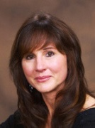
Chief Executive Officer & Executive Director — Bobby Jones Chiari & Syringomyelia Foundation
Dorothy Poppe is the Chief Executive Officer and Executive Director of the Bobby Jones Chiari & Syringomyelia Foundation (Bobby Jones CSF). With over 30 years of experience in the nonprofit sector, she leads the organization’s efforts to advance research, provide medical education, and support families affected by Chiari malformation and related disorders. Poppe manages the foundation’s research agenda and maintains relationships with its Medical Research Board to foster scientific breakthroughs. Poppe has expanded the foundation’s reach through various educational and support programs. Under her leadership, the foundation provides free educational materials and web-based lectures to more than 3,000,000 individuals globally.
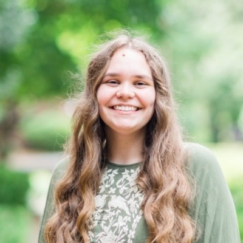
PhD Student, Bioengineering — Northeastern University; CMI Patient
Hannah is a first-year PhD student in Bioengineering at Northeastern University whose research focuses on linking observable parameters — such as waveform morphology and tissue composition — to symptomatology in Chiari Malformation Type I (CMI). In addition to her extensive background in fluid mechanics and engineering, Hannah has CMI, EDS, and many other comorbidities that have often been under-researched in the medical community. She values her role as a patient-scientist because it allows her to connect with other CMI patients, ease their lab experiences, and translate complex research findings into terms digestible from a patient’s perspective. Hannah looks forward to collaborating with more patient-scientists in the future and having a career studying CSF disorders.
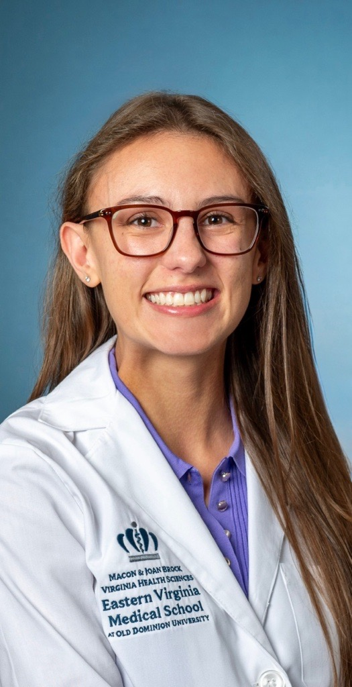
Fourth-Year Medical Student — Eastern Virginia Medical School; CMI Patient
Ms. Stutheit is a fourth-year medical student at Eastern Virginia Medical School. She graduated with a Bachelor of Science in Biology and a double minor in Chemistry and Medical Anthropology from the University of North Carolina at Chapel Hill. Since beginning medical school, Emily has served as the clinic coordinator of the Gynecology HOPES Free Clinic, the REVIVE! Opioid Overdose and Naloxone Education Program student lead, and one of the founding co-presidents of the first Medical Students with Disability and Chronic Illness (MSDCI) chapter in Virginia. Emily was diagnosed with Chiari I malformation in September 2024, and syringomyelia a month later. She received decompression surgery in November 2024.
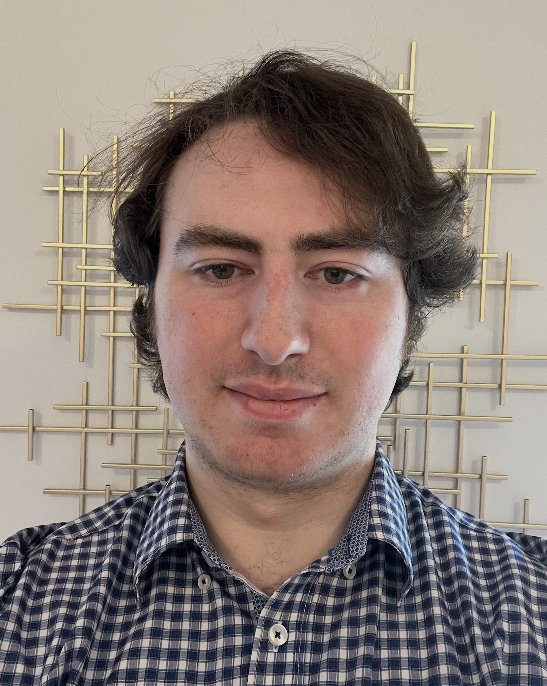
Graduate Researcher — Chiari Neurobiomechanics Research Laboratory, Northeastern University; CMI Patient
Matthew joined the lab in May 2026. His studies involve investigating clinical datasets, patient-reported outcomes, and atmospheric variables to identify trends and improve understanding of symptom variability in Chiari patients. He also works on software development and large-scale data analysis related to Chiari malformation symptomatology, including investigation of potential associations between environment- and weather-related factors and symptom fluctuations. He is pursuing an M.S. in Computer Science at Northeastern University (Khoury College), expected graduation 2027, and previously earned an M.S. in Game Design from Northeastern University (CAMD) and a B.S. in Integrated Design & Media from New York University (Tandon School of Engineering). Hometown: Roslyn, NY.
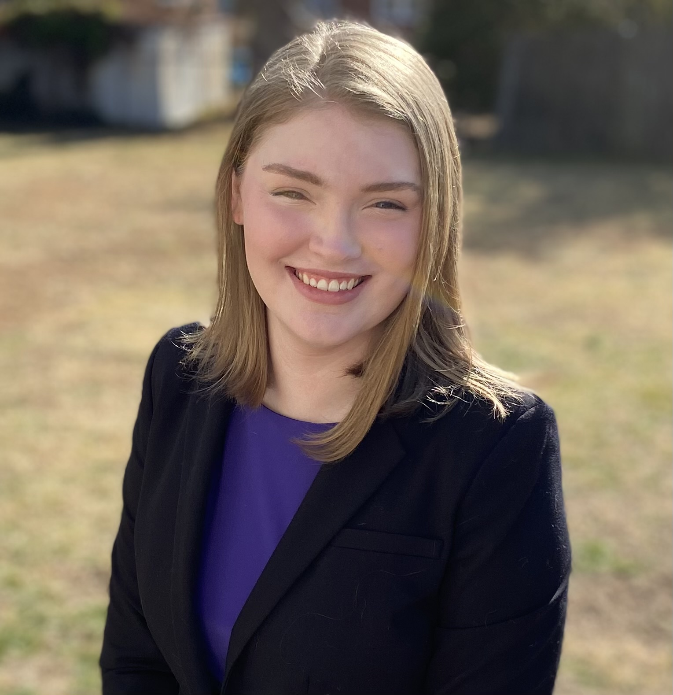
PhD Student, Leadership Studies — University of Lynchburg; CMI Patient
Victoria is a first-year PhD student in Leadership Studies at the University of Lynchburg. She graduated with a Bachelor of Science in Behavioral Neuroscience with minors in Anthropology and Sociology from Nova Southeastern University and holds a Master’s in Nonprofit Leadership Studies from the University of Lynchburg. Victoria works for the American Association for the Study of Liver Diseases, supporting grants and early career programs for researchers and clinicians interested in pursuing a career in hepatology. She also holds her Certification in Volunteer Administration (CVA) and has been an avid volunteer for Conquer Chiari and mentoring programs over the years. Victoria was diagnosed with Chiari around four months old and underwent decompression surgery in July 2012. She was recently diagnosed with EDS and hopes that sharing her experiences can help the rare disease community in the future.
Research posters and live demonstrations presented throughout the day during dedicated demo / poster sessions.
More posters to be listed at a later date.
Interdisciplinary Science & Engineering Complex (ISEC)
805 Columbus Ave
Boston, MA 02120
Hotel accommodations and additional parking information are available on the event registration page.
Questions? Email us at f.loth@northeastern.edu